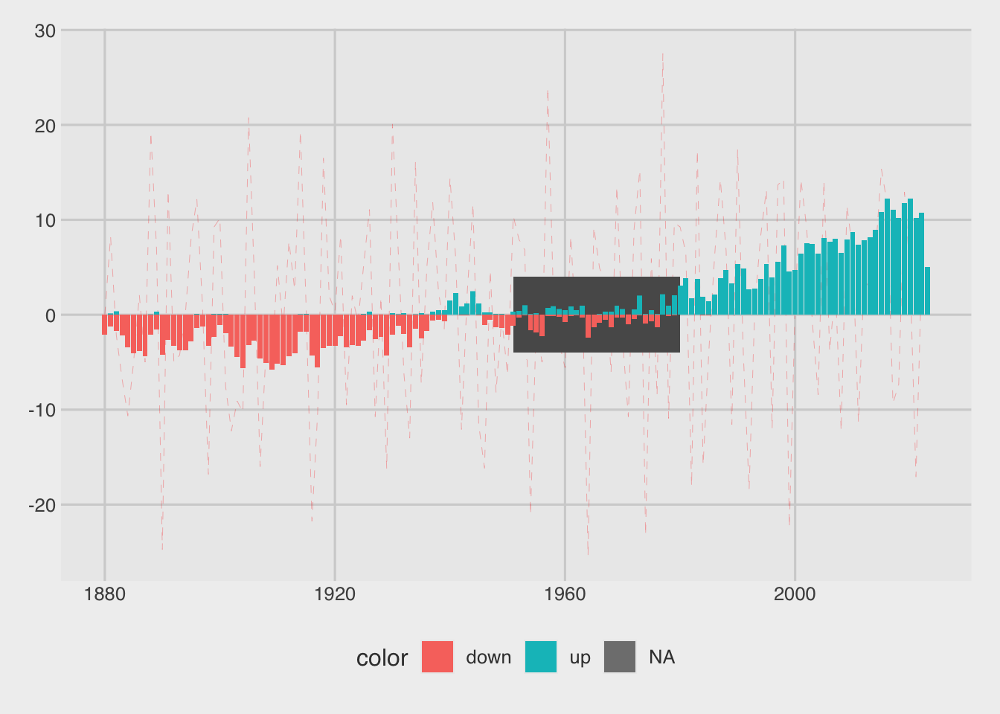

library(tidyverse)
tuesdata <- tidytuesdayR::tt_load(2023, week = 28)To cite Federica’s work, please use: Gazzelloni F., 2023 Data Visualization GIST
Source of original design: https://earthobservatory.nasa.gov/world-of-change/global-temperatures#:~:text=According%20to%20an%20ongoing%20temperature,1.9%C2%B0%20Fahrenheit)%20since%201880.
tuesdata$global_temps%>%head# A tibble: 6 × 19
Year Jan Feb Mar Apr May Jun Jul Aug Sep Oct Nov Dec
<dbl> <dbl> <dbl> <dbl> <dbl> <dbl> <dbl> <dbl> <dbl> <dbl> <dbl> <dbl> <dbl>
1 1880 -0.19 -0.25 -0.09 -0.17 -0.1 -0.21 -0.18 -0.11 -0.15 -0.24 -0.22 -0.18
2 1881 -0.2 -0.15 0.03 0.05 0.05 -0.19 0 -0.04 -0.16 -0.22 -0.19 -0.08
3 1882 0.16 0.13 0.04 -0.16 -0.14 -0.22 -0.17 -0.08 -0.15 -0.24 -0.17 -0.36
4 1883 -0.3 -0.37 -0.13 -0.19 -0.18 -0.08 -0.08 -0.14 -0.23 -0.12 -0.24 -0.11
5 1884 -0.13 -0.09 -0.37 -0.4 -0.34 -0.35 -0.31 -0.28 -0.28 -0.25 -0.34 -0.31
6 1885 -0.59 -0.34 -0.27 -0.42 -0.45 -0.44 -0.34 -0.32 -0.29 -0.24 -0.24 -0.11
# ℹ 6 more variables: `J-D` <dbl>, `D-N` <dbl>, DJF <dbl>, MAM <dbl>,
# JJA <dbl>, SON <dbl>Global Temperature Anomalies
Anomalies are calculated with respect to the 1951-1980 climatology.
Global Temperatures are in C° degrees, what we see here is the difference in temperature as a result of an application of a model to estimate the mean difference in temperatures with respect to 1951-1980 time-frame.
global_temps <- tuesdata$global_temps
global_temps%>%select(1:13)%>%summary() Year Jan Feb Mar
Min. :1880 Min. :-0.81000 Min. :-0.6300 Min. :-0.63000
1st Qu.:1916 1st Qu.:-0.24000 1st Qu.:-0.2400 1st Qu.:-0.22250
Median :1952 Median :-0.01500 Median :-0.0400 Median : 0.01500
Mean :1952 Mean : 0.06333 Mean : 0.0709 Mean : 0.08889
3rd Qu.:1987 3rd Qu.: 0.31000 3rd Qu.: 0.3825 3rd Qu.: 0.32250
Max. :2023 Max. : 1.18000 Max. : 1.3700 Max. : 1.36000
Apr May Jun Jul
Min. :-0.58000 Min. :-0.55000 Min. :-0.52000 Min. :-0.51000
1st Qu.:-0.25000 1st Qu.:-0.24000 1st Qu.:-0.25000 1st Qu.:-0.19000
Median :-0.02500 Median :-0.04000 Median :-0.05000 Median :-0.03000
Mean : 0.06368 Mean : 0.05292 Mean : 0.03315 Mean : 0.05587
3rd Qu.: 0.28250 3rd Qu.: 0.27250 3rd Qu.: 0.24000 3rd Qu.: 0.23500
Max. : 1.13000 Max. : 1.02000 Max. : 0.93000 Max. : 0.94000
NA's :1 NA's :1
Aug Sep Oct Nov
Min. :-0.55000 Min. :-0.58000 Min. :-0.5800 Min. :-0.55000
1st Qu.:-0.22000 1st Qu.:-0.19000 1st Qu.:-0.2000 1st Qu.:-0.17500
Median :-0.05000 Median :-0.06000 Median : 0.0100 Median : 0.02000
Mean : 0.05441 Mean : 0.05818 Mean : 0.0842 Mean : 0.07776
3rd Qu.: 0.23500 3rd Qu.: 0.24000 3rd Qu.: 0.2450 3rd Qu.: 0.23000
Max. : 1.02000 Max. : 0.99000 Max. : 1.0900 Max. : 1.11000
NA's :1 NA's :1 NA's :1 NA's :1
Dec
Min. :-0.82000
1st Qu.:-0.22000
Median :-0.04000
Mean : 0.05182
3rd Qu.: 0.30500
Max. : 1.16000
NA's :1 Historical spatial variations in surface temperature anomalies are derived from historical weather station data and ocean data from ships, buoys, and other sensors. Uncertainties arise from measurement uncertainty, changes in spatial coverage of the station record, and systematic biases due to technology shifts and land cover changes.1
The differencing applied to the estimated mean values are used to calculate the yearly rate of change in percentage value.
\[\text{rate of change}=\frac{y_2-y_1}{x_2-x_1}\]
diff <- global_temps %>%
select(1:13) %>% # count(Year) 1880 - 2023
pivot_longer(cols = -Year)%>%
mutate(color=ifelse(value>0,"up","down"))%>%
# grouping by Year, data are reframed to obtain a new vector
group_by(Year)%>%
# with the average values of the anomalies estimations
reframe(avg_val=mean(value))%>%
# the yearly rate of change in temperature anomalies
mutate(diff=c(0,diff(avg_val))*100)
diff%>%summary() Year avg_val diff
Min. :1880 Min. :-0.48333 Min. :-25.4167
1st Qu.:1916 1st Qu.:-0.19833 1st Qu.: -7.2917
Median :1952 Median :-0.05750 Median : 2.0000
Mean :1952 Mean : 0.06021 Mean : 0.7494
3rd Qu.:1987 3rd Qu.: 0.26583 3rd Qu.: 8.6667
Max. :2023 Max. : 1.02083 Max. : 27.5000
NA's :1 NA's :1 summary(diff$avg_val) Min. 1st Qu. Median Mean 3rd Qu. Max. NA's
-0.48333 -0.19833 -0.05750 0.06021 0.26583 1.02083 1 Here we see the application:
\[\text{rate ratio}=\frac{y_{t+1}}{y_{t}}\]
rates_df <- diff%>%
mutate(abs_lag=abs(lag(avg_val)),
rate_change=diff/abs_lag,
rr= avg_val/lag(avg_val))
rates_df%>%head# A tibble: 6 × 6
Year avg_val diff abs_lag rate_change rr
<dbl> <dbl> <dbl> <dbl> <dbl> <dbl>
1 1880 -0.174 0 NA NA NA
2 1881 -0.0917 8.25 0.174 47.4 0.526
3 1882 -0.113 -2.17 0.0917 -23.6 1.24
4 1883 -0.181 -6.75 0.113 -59.6 1.60
5 1884 -0.288 -10.7 0.181 -59.0 1.59
6 1885 -0.338 -5.00 0.288 -17.4 1.17 rates_df%>%
ggplot(aes(x=Year,y=avg_val))+
geom_rect(xmin=1938,xmax=1980,ymin=-Inf,ymax=Inf,alpha=0.1,fill="grey")+
geom_rect(xmin=1951,xmax=1980,ymin=-Inf,ymax=Inf,alpha=0.1,fill="grey60")+
geom_line()+
geom_line(aes(y=rr/100),
color="darkred",
inherit.aes = T)+
scale_x_continuous(n.breaks = 10)Warning: Removed 1 row containing missing values or values outside the scale range
(`geom_line()`).Warning: Removed 2 rows containing missing values or values outside the scale range
(`geom_line()`).
rates_df%>%
filter(Year>= 1980)%>%
select(rr)%>%
map_dbl(\(rr) mean(rr,na.rm = T)) rr
1.093974 Considering all temperatures anomalies from 1978 to 2023, on average the steady increase is about 1.6% percent rate.
diff%>%
drop_na()%>%
filter(Year> 1977)%>%
select(diff)%>%
map_dbl(\(diff) mean(diff))diff
1.6 The line plot shows yearly temperature anomalies from 1880 to 2023.
Estimate of temperature change that could be compared with predictions of global climate change in response to atmospheric carbon dioxide, aerosols, and changes in solar activity.
These in situ measurements are analyzed using an algorithm that considers the varied spacing of temperature stations around the globe and urban heat island effects.
global_temps %>%
select(1:13) %>% # count(Year) 1880 - 2023
pivot_longer(cols = -Year) %>%
mutate(color=ifelse(value>0,"up","down")) %>%
# group_by(Year)%>%
# reframe(avg_val=mean(value))%>%
ggplot(aes(x=Year,y=value,group=name,color=name))+
geom_line(linewidth=0.3)+
geom_smooth(se=F,linewidth=0.1)+
scale_x_continuous(n.breaks = 10)+
scale_color_manual(values = RColorBrewer::brewer.pal(12,"Paired"))+
labs(color="Time(Month)")+
ggthemes::theme_fivethirtyeight()
diff %>%
ggplot(aes(x=Year,y=diff))+
geom_line(color="darkred",
linewidth=0.5)+
geom_hline(yintercept = 0)Warning: Removed 1 row containing missing values or values outside the scale range
(`geom_line()`).
global_temps2 <- global_temps %>%
select(1:13) %>% # count(Year) 1880 - 2023
pivot_longer(cols = -Year) %>%
mutate(color=ifelse(value>0,"up","down"))
global_temps2 %>% head# A tibble: 6 × 4
Year name value color
<dbl> <chr> <dbl> <chr>
1 1880 Jan -0.19 down
2 1880 Feb -0.25 down
3 1880 Mar -0.09 down
4 1880 Apr -0.17 down
5 1880 May -0.1 down
6 1880 Jun -0.21 down An approximate explanation:
set.seed(1234)
train_id <- sample_frac(tibble(id=row_number(global_temps2)),0.8)
training <- global_temps2[pull(train_id),]
testing <- global_temps2%>%anti_join(training)Joining with `by = join_by(Year, name, value, color)`fit<- lm(value ~ Year, data=training)
summary(fit, show.intercept= FALSE)
Call:
lm(formula = value ~ Year, data = training)
Residuals:
Min 1Q Median 3Q Max
-0.51002 -0.14967 -0.01338 0.14390 0.79641
Coefficients:
Estimate Std. Error t value Pr(>|t|)
(Intercept) -1.544e+01 2.623e-01 -58.86 <2e-16 ***
Year 7.942e-03 1.344e-04 59.09 <2e-16 ***
---
Signif. codes: 0 '***' 0.001 '**' 0.01 '*' 0.05 '.' 0.1 ' ' 1
Residual standard error: 0.2062 on 1374 degrees of freedom
(6 observations deleted due to missingness)
Multiple R-squared: 0.7176, Adjusted R-squared: 0.7174
F-statistic: 3492 on 1 and 1374 DF, p-value: < 2.2e-16broom::augment(fit)%>%head# A tibble: 6 × 9
.rownames value Year .fitted .resid .hat .sigma .cooksd .std.resid
<chr> <dbl> <dbl> <dbl> <dbl> <dbl> <dbl> <dbl> <dbl>
1 1 0.52 1988 0.351 0.169 0.00130 0.206 0.000438 0.819
2 2 -0.21 1964 0.161 -0.371 0.000797 0.206 0.00129 -1.80
3 3 -0.07 1973 0.232 -0.302 0.000930 0.206 0.001000 -1.47
4 4 0.18 1963 0.153 0.0273 0.000787 0.206 0.00000693 0.133
5 5 0.05 1931 -0.101 0.151 0.000899 0.206 0.000243 0.735
6 6 -0.11 1955 0.0891 -0.199 0.000733 0.206 0.000342 -0.966broom::augment(fit)%>%
left_join(global_temps2,by=c("Year","value"))%>%
ggplot(aes(x=Year,value,group=name))+
geom_line(color="steelblue",linewidth=0.5)+
geom_line(aes(y=.fitted),inherit.aes = T)Warning in left_join(., global_temps2, by = c("Year", "value")): Detected an unexpected many-to-many relationship between `x` and `y`.
ℹ Row 2 of `x` matches multiple rows in `y`.
ℹ Row 1534 of `y` matches multiple rows in `x`.
ℹ If a many-to-many relationship is expected, set `relationship =
"many-to-many"` to silence this warning.
predict(fit,newdata = tibble(Year=c(2024,2025,2026))) 1 2 3
0.6371218 0.6450638 0.6530059 prediction<- tibble(Year=c(2024,2025,2026),
pred=predict(fit,
newdata = tibble(Year=c(2024,2025,2026))))
broom::augment(fit)%>%
left_join(global_temps2,by=c("Year","value"))%>%
ggplot(aes(x=Year,value))+
geom_line(aes(group=name),color="steelblue",linewidth=0.5)+
geom_line(aes(y=.fitted),inherit.aes = T)+
geom_line(data=prediction, mapping=aes(x=Year,y=pred),color="darkred")Warning in left_join(., global_temps2, by = c("Year", "value")): Detected an unexpected many-to-many relationship between `x` and `y`.
ℹ Row 2 of `x` matches multiple rows in `y`.
ℹ Row 1534 of `y` matches multiple rows in `x`.
ℹ If a many-to-many relationship is expected, set `relationship =
"many-to-many"` to silence this warning.
tag<-tibble(tag_history= c("The basic GISS temperature analysis scheme was defined in the late 1970s by James Hansen when a method of estimating global temperature change was needed for comparison with one-dimensional global climate models."),
tag_stats = c("According to an ongoing temperature analysis led by scientists at NASA's Goddard Institute for Space Studies (GISS), the average global temperature on Earth has increased by at least 1.1° Celsius (1.9° Fahrenheit) since 1880."),
tag_reading =c("How to read this graph: The dashed-line depicts the average Global temperature with a one-year lag. The bars represent temperature anomalies estimated with respect to the 1951-1980 climatology."))library(grid)
global_temps2 %>%
ggplot(aes(x=Year,y=value))+
geom_line(data=diff,
mapping=aes(x=Year,y=diff),
inherit.aes = F,
linetype="dashed",
color="red",
linewidth=0.05)+
geom_rect(xmin=1951,xmax=1980,
ymin=-4,ymax=4,
#fill="grey70",
alpha=0.8)+
geom_col(aes(fill=color))+
ggthemes::theme_fivethirtyeight()
global_temps2 %>%
ggplot(aes(x=Year,y=value))+
geom_line(data=diff,
mapping=aes(x=Year,y=diff),
inherit.aes = F,
linetype="dashed",
color="grey80",
linewidth=0.1)+
geom_rect(xmin=1951,xmax=1980,
ymin=-4,ymax=4,
alpha=0.8)+
geom_col(aes(fill=color))+
geom_segment(aes(x=min(Year)-1,xend=min(Year)-1,
y=0,yend=-10),
color="grey70",
linewidth=1.5,
lineend="butt",
arrow=arrow(length = unit(0.1, "inches")))+
geom_segment(aes(x=max(Year)+1,xend=max(Year)+1,
y=0,yend=10),
color="grey70",
linewidth=1.5,
lineend="butt",
arrow=arrow(length = unit(0.1, "inches")))+
geom_segment(aes(x=1940,xend=1940,
y=0,yend=10),
color="grey70",
linewidth=0.5,
lineend="butt",
arrow=arrow(length = unit(0.1, "inches")))+
geom_segment(aes(x=1957,xend=1957,
y=0,yend=10),
color="grey70",
linewidth=0.5,
lineend="butt",
arrow=arrow(length = unit(0.1, "inches")))+
geom_segment(aes(x=1979,xend=1979,
y=0,yend=-10),
color="grey70",
linewidth=0.5,
lineend="butt")+
ggtext::geom_textbox(data = tag,aes(x=1979,y=-15,label = tag_stats),
size = 3,
family="Roboto Condensed",
width = unit(20, "line"),
alpha = 0.9,
color="grey70",
fill="grey4",
box.colour = "grey70") +
ggtext::geom_textbox(data = tag,aes(x=1920,y=-25,label = tag_reading),
size = 3,
family="Roboto Condensed",
width = unit(20, "line"),
alpha = 0.9,
color="grey70",
fill="grey4",
box.colour = "grey4") +
geom_hline(yintercept = 0,linewidth=2,color="grey70")+
geom_vline(xintercept = 1951,color="red",alpha=0.2)+
geom_vline(xintercept = 1980,color="red",alpha=0.2)+
scale_x_continuous(n.breaks = 10)+
scale_y_continuous()+
annotate(geom = "text",
family="Roboto Condensed",
fontface="bold",
label="Global Surface\nTemperatures Anomalies\n1880 - 2023",
size=12,
color="grey70",
hjust=0,
x = 1880 ,y =c(21) )+
annotate(geom = "text",
family="Roboto Condensed",
fontface="bold",
label="First rise\nto previous year in 1940 ",
size=3,
color="grey70",
hjust=0,
x = 1941 ,y =c(13) )+
annotate(geom = "text",
family="Roboto Condensed",
fontface="bold",
label="Second big rise\nto previous year in 1957",
size=3,
color="grey70",
hjust=0,
x = 1959 ,y =c(7) )+
annotate(geom = "text",
family="Roboto Condensed",
fontface="bold",
label="Steady average rise of 1.09°C\nsince 1979",
size=3,
color="grey70",
hjust=0,
x = 1980 ,y =c(-7) )+
annotation_custom(grob = grid::circleGrob(x=0,y=0.1,gp=gpar(col="grey70",fill=NA)),
xmin = 1940,
xmax = 1950,
ymin = 0,ymax = 10)+
ggthemes::scale_fill_fivethirtyeight()+
labs(title="",
caption = "\nDataSource: NASA GISS Surface Temperature Analysis (GISTEMP v4)\nDataViz: #TidyTuesday 2023 - week 28 by Federica Gazzelloni\n",
fill="Temperature",
y="Monthly Means")+
theme_void()+
theme(text=element_text(color="grey70",family="Roboto Condensed"),
plot.caption = element_text(hjust = 0.5,lineheight = 1),
axis.text.x = element_text(color="grey70"),
plot.background = element_rect(color="grey4",
fill="grey4"),
legend.position = "bottom",
legend.title = element_text(color="black"),
legend.text = element_text(color="black"),
legend.background = element_rect(color="grey70",fill="grey70"))
ggsave("w28_GIST.png")Saving 7 x 5 in imageWarning in geom_segment(aes(x = min(Year) - 1, xend = min(Year) - 1, y = 0, : All aesthetics have length 1, but the data has 1728 rows.
ℹ Please consider using `annotate()` or provide this layer with data containing
a single row.Warning in geom_segment(aes(x = max(Year) + 1, xend = max(Year) + 1, y = 0, : All aesthetics have length 1, but the data has 1728 rows.
ℹ Please consider using `annotate()` or provide this layer with data containing
a single row.Warning in geom_segment(aes(x = 1940, xend = 1940, y = 0, yend = 10), color = "grey70", : All aesthetics have length 1, but the data has 1728 rows.
ℹ Please consider using `annotate()` or provide this layer with data containing
a single row.Warning in geom_segment(aes(x = 1957, xend = 1957, y = 0, yend = 10), color = "grey70", : All aesthetics have length 1, but the data has 1728 rows.
ℹ Please consider using `annotate()` or provide this layer with data containing
a single row.Warning in geom_segment(aes(x = 1979, xend = 1979, y = 0, yend = -10), color = "grey70", : All aesthetics have length 1, but the data has 1728 rows.
ℹ Please consider using `annotate()` or provide this layer with data containing
a single row.Warning: Removed 1 row containing missing values or values outside the scale range
(`geom_line()`).Warning: Removed 7 rows containing missing values or values outside the scale range
(`geom_col()`).Footnotes
Source: https://pubs.giss.nasa.gov/abs/le05800h.html↩︎